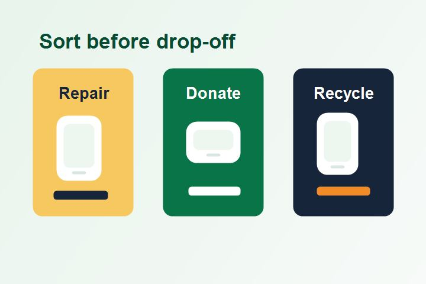
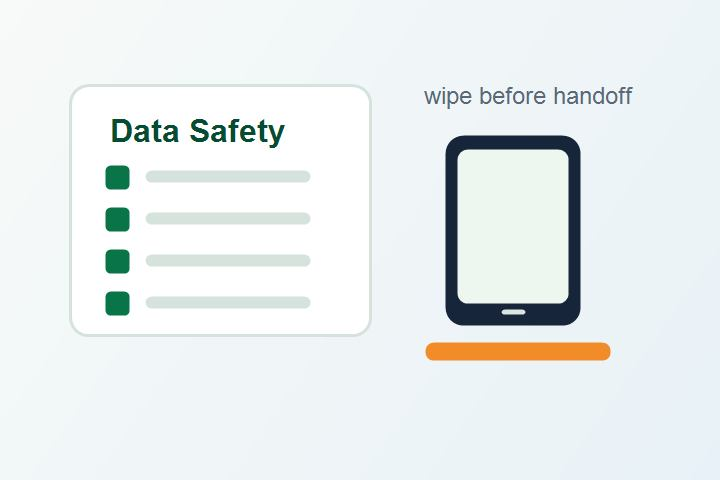

Action guide
Choose the safest next step for each device.
Answer two questions, compare sample local partners, and save the best option for later.

Decision assistant
Repair, donate, recycle, or handle carefully?
Partner finder
Browse responsible e-waste options
These sample partners show how the final eWiseCircle resource locator would sort services by region and device need.
No partner saved yet.

Before you hand it off
Protect data and people first.
Every device deserves a short safety check before repair, donation, or recycling. This keeps your information private and helps collection workers handle risky parts correctly.
- Back up files you still need.
- Sign out of accounts and remove saved passwords.
- Factory reset phones, tablets, and laptops.
- Tape exposed battery terminals before transport.